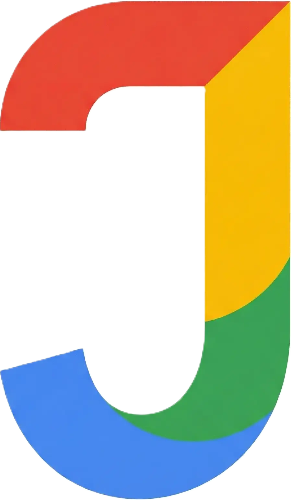

Scopri FarmaFind24: La Tua Salute a Portata di Mano
Il progetto FarmaFind24 nasce dalla convinzione che l'accesso ai servizi sanitari debba
evolversi.
Non siamo un semplice motore di ricerca, ma un ponte digitale tra il cittadino e le farmacie del territorio
padovano.
La nostra missione
Il nostro obiettivo è eliminare l'ansia e l'incertezza, permettendoti di sapere in ogni momento dove
trovare un farmaco salvavita o quale farmacia è di turno.
Crediamo che la tecnologia non debba essere un ostacolo, ma uno strumento che facilita il contatto umano
senza sostituirlo.
Lavoriamo ogni giorno affinché nessuno debba più preoccuparsi di trovare una farmacia aperta nel momento del
bisogno.
Per la provincia di Padova
Sappiamo che la richiesta di salute non cambia uscendo dalle mura cittadine: l'efficienza deve essere la stessa ovunque. Per questo monitoriamo la disponibilità delle farmacie in ogni zona, dai Colli Euganei all'Alta Padovana, garantendo a tutti lo stesso diritto alla salute.
Impegno verso la comunità
Il gruppo FarmaFind24 crede che l'evoluzione passi attraverso la conoscenza e la condivisione. Per questo ci teniamo ad essere attivi sul territorio per promuovere salute e benessere.
- Durante il periodo natalizio, nelle farmacie aderenti, è possibile acquistare il peluche FarmaTeddy. L'intero ricavato della vendita viene devoluto allo IOV per finanziare borse di studio destinate ai ricercatori.
- Ci siamo battuti perchè alcune farmacie diventassero Punti Viola, cioè luoghi sicuri per chiunque si senta in pericolo. Chiunque può entrare in una di queste farmacie e trovare accoglienza immediata da parte di farmacisti adeguatamente formati in collaborazione con il Centro Veneto Progetti Donna.
- Uniti con le associazioni che si occupano di DCA presenti sul nostro territorio, in tutte le farmacie è possibile trovare materiale informativo aggiornato contenente i contatti degli sportelli di ascolto e dei centri specializzati.
- Partecipiamo attivamente alla Giornata della Prevenzione che si tiene ogni anno a Prato della Valle. Qui organizziamo i FarmaTalks, una serie di incontri aperti al pubblico dove invitiamo diversi specialisti per discutere di salute e prevenzione.
I nostri Sponsor

Contattaci
Hai domande, suggerimenti o hai bisogno di supporto? Il nostro team è qui per aiutarti.
Contattaci direttamente utilizzando i riferimenti che trovi qui di seguito.
- Dove trovarci:
- Via Trieste 63 - Torre Archimede, 35100 Padova, Italia
- Telefono:
- +39 321 6767679
- Email:
- farmafind24@gmail.com